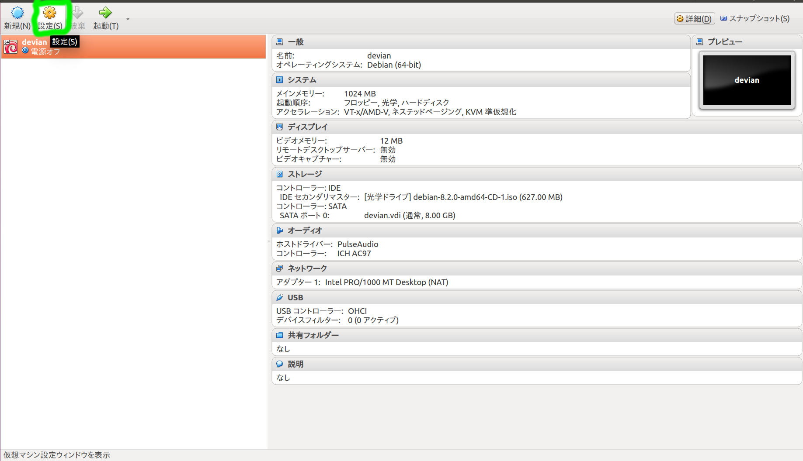
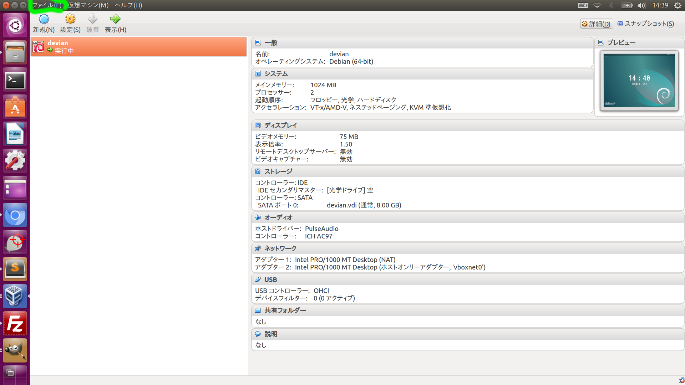
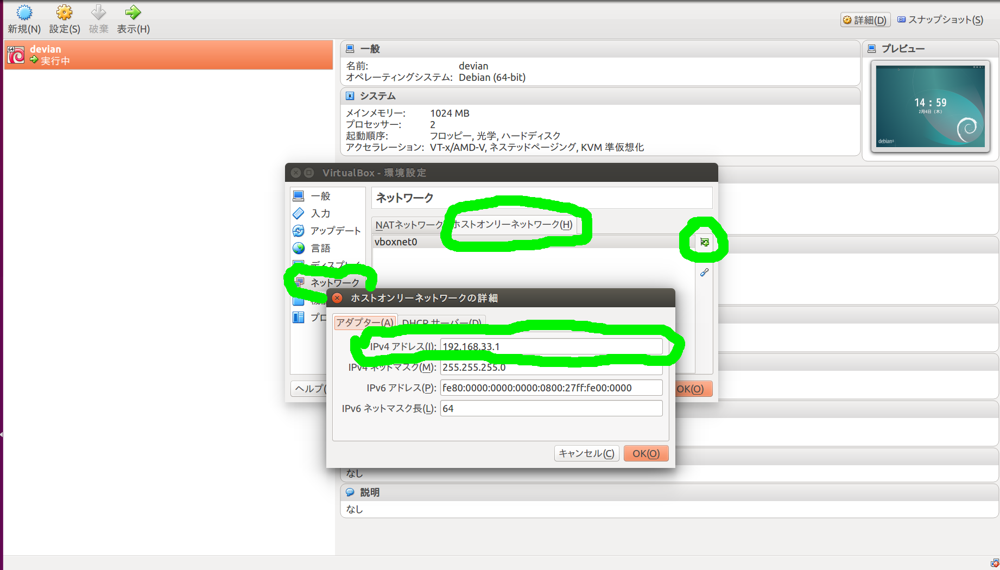

仮想マシンのネットワーク設定
1.VirtualBoxの管理画面からdevianを選択し設定ボタンをクリックし、ネットワーク設定を選ぶ

3.アダプタ２をホストオンリーアダプタに設定
※追加できない時の対処法 VirtualBoxメニューバーのファイル→環境設定→ネットワーク
→ホストオンリーネットワーク→右端の+アイコンをクリック

vartiualbox が仮想ルータとなりホストOS ゲストOSだけのネットワークを作る
IPV4にゲストosのアドレスを設定
ゲストOSには/etc/network/interface をviで編集
auto eth1
iface eth1 inet static
address 192.168.33.10
netmask 255.255.255.0
gateway 192.168.55.100
を追加
sudo service networking restartを実行

これで仮想マシンのネットワーク設定は完了です。